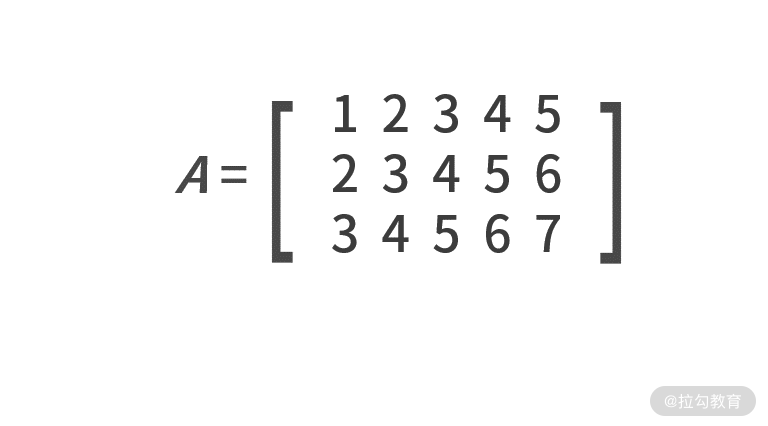
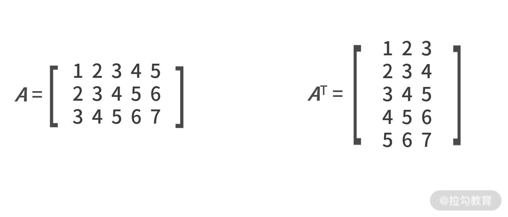
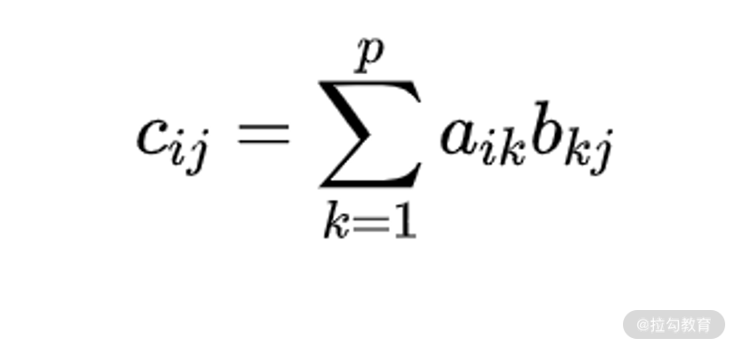
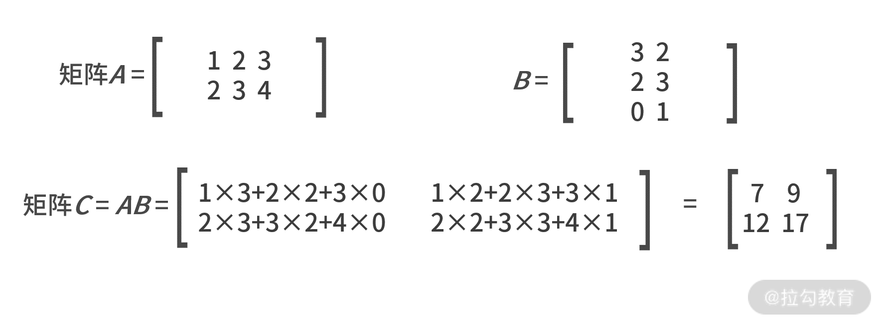
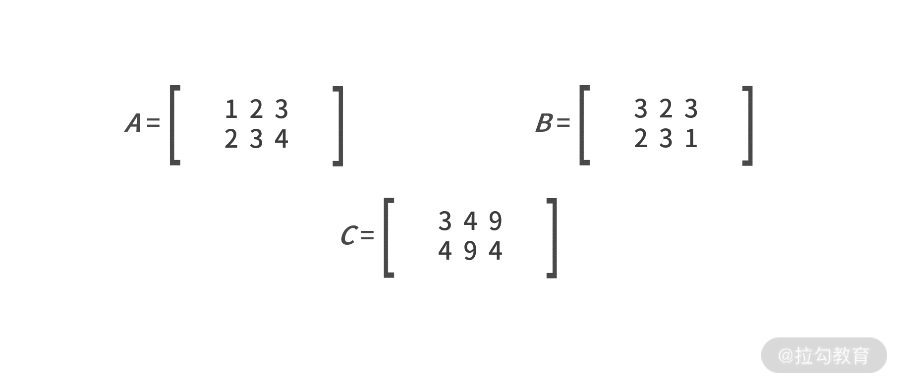
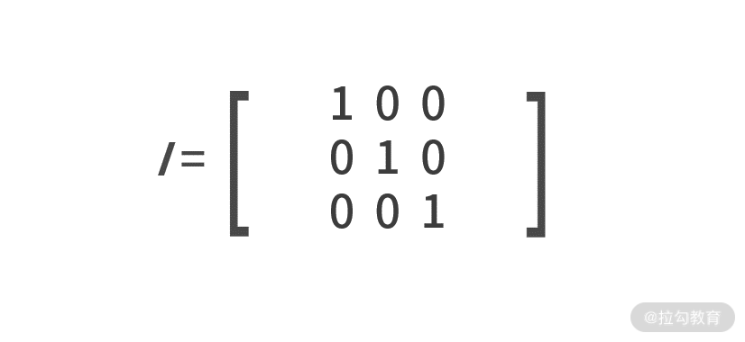
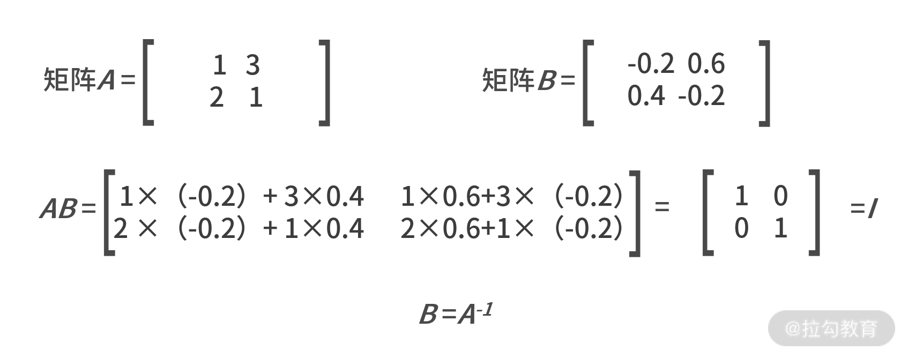
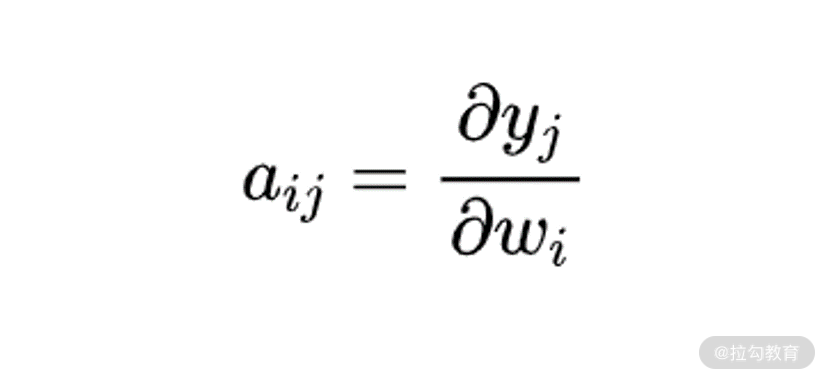
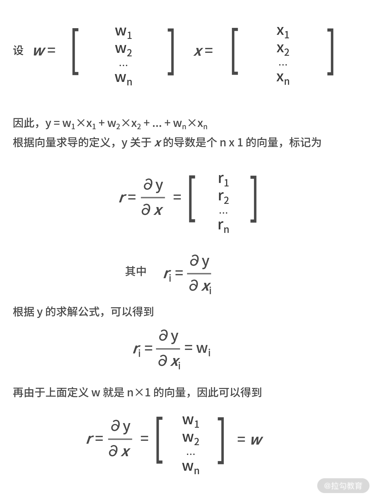
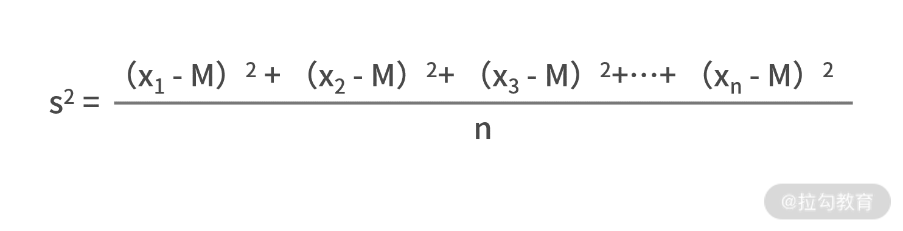

- 00 开篇词 数学，编程能力的营养根基.md
- 01 从计数开始，程序员必知必会的数制转换法.md
- 02 逻辑与沟通，怎样才能讲出有逻辑的话？.md
- 03 用数学决策，如何规划好投入、转化和产出？.md
- 04 万物可数学，经典公式是如何在生活中应用的？.md
- 05 求极值：如何找到复杂业务的最优解？.md
- 06 向量及其导数：计算机如何完成对海量高维度数据计算？.md
- 07 线性回归：如何在离散点中寻找数据规律？.md
- 08 加乘法则：如何计算复杂事件发生的概率？.md
- 09 似然估计：如何利用 MLE 对参数进行估计？.md
- 10 信息熵：事件的不确定性如何计算？.md
- 11 灰度实验：如何设计灰度实验并计算实验的收益？.md
- 12 统计学方法：如何证明灰度实验效果不是偶然得到的？.md
- 13 复杂度：如何利用数学推导对程序进行优化？.md
- 14 程序的循环：如何利用数学归纳法进行程序开发？.md
- 15 递归：如何计算汉诺塔问题的移动步数？.md
- 16 二分法：如何利用指数爆炸优化程序？.md
- 17 动态规划：如何利用最优子结构解决问题？.md
- 18 AI 入门：利用 3 个公式搭建最简 AI 框架.md
- 19 逻辑回归：如何让计算机做出二值化决策？.md
- 20 决策树：如何对 NP 难复杂问题进行启发式求解？.md
- 21 神经网络与深度学习：计算机是如何理解图像、文本和语音的？.md
- 22 面试中那些坑了无数人的算法题.md
- 23 站在生活的十字路口，如何用数学抉择？.md
- 24 结束语 数学底子好，学啥都快.md
06 向量及其导数：计算机如何完成对海量高维度数据计算？
在上一课时，我们学习了利用梯度下降法求解函数的极值。我举了个例子，如果商品利润函数 r 和补贴金额 x 的关系为 r(x) = p(x)×(m - x - c) = (2/(1+e-x) - 1)×(16 - x - 8)，然后我又利用梯度下降法，求解出让利润最大的补贴额 x* 为 2.42 元。
就这个例题而言，其实根本不需要求导法或者是梯度下降法。这是因为，商品定价是 8 元，补贴额 x 的决策空间就是从不打折的 0 元到不要钱的 8 元。如果最小颗粒度是“分”，那么决策空间就是 0.00元～8.00元，这 801 个变量而已。写个 for 循环，对每一个可能的补贴额都简单粗暴地计算一遍，也是一种简单可行的方法。
然而，实际问题中可能会更加复杂。例如，购买概率除了与补贴额有关以外，还跟同行竞争对手的补贴额、商品的有效期、温度、天气、节假日等因素有关。假设有 n 个可能的因素，每个因素的决策空间都是 801 个，那么整体的决策空间就瞬间变成了 801n 个！
此时再用简单粗暴的 for 循环计算就变得不现实了，这也是在大数据环境下，数学算法对复杂业务环境求解计算的优势。
向量是高维度数据的处理单元
我们提到，除了补贴额，影响商品购买率的因素还有很多。为了综合刻画这些因素对购买概率以及利润的影响，自然就需要用多元函数来表达，即 r(x,y,z…) = r(补贴额，有效期，温度…)。
- 维度
每个影响购买概率的因素，又可称作维度。当维度逐渐变多时，就意味着我们需要在高维度数据空间下处理某个多元函数。在计算机或数学领域中，通常用向量或矩阵来对高维度数据进行计算和表示。
- 向量
向量是高维度数据的表现形式，它由多个数字组合在一起，其中每个数字都是某个维度的特征值。通常印刷体用斜体、加粗的小写字母表示，例如 a=[1,2,3,4,5]，而手写时在字母顶上加一小箭头“→”即可。
- 矩阵
既然向量是多个数字的组合，同样我们也可以把多个向量组合在一起就得到了矩阵。矩阵通常用斜体、加粗的大写字母表示，例如：

根据向量和矩阵的定义，不难发现向量是一种行数为 1 或列数为 1 的特殊矩阵。有了向量和矩阵，就能把高维度的数据用简单的数学符号表达了。
矩阵的基本运算
因为向量是一种特殊的矩阵，矩阵的基本运算对于向量也适用。
1.转置
先来介绍一下矩阵的转置。转置用大写字母 T 作为上标来表示，作用是交换矩阵行和列的值。这样原本的大小就由 n×m 变成 m×n 了，例如：

2.向量的点乘运算
点乘运算只适用于向量，用“·”表示。计算的结果为，两个向量所有对应项的乘积之和。例如，向量 a= [a1,a2,…,an] ,b= [b1,b2,…,bn]，则a·b=a1b1+a2b2+……+anbn。例如 a= [1,2,3] ,b= [2,3,4]，则 a·b= 1×2 + 2×3 + 3×4 = 20。
3.矩阵的乘积运算
接下来看一下矩阵相关的乘积运算。矩阵可以有两种乘积相关的运算，第一个是矩阵的乘法，第二个是哈达玛积。
- 运算矩阵的乘法
如果有 n×p 的矩阵 A 和 p×m 的矩阵 B，则矩阵A 和 B 可以做乘法运算。其乘积结果 C =AB 的大小为 n×m，其中每个元素的数值为（C 矩阵中第 i 行第 j 列）

需要注意的是，矩阵的乘法对维数有严格要求。第一个矩阵的列数与第二个的行数必须相等。所以，矩阵的乘法并不满足交换律。

- 哈达玛积
哈达玛积在对海量数据预处理中会被高频使用，它的计算方式相对简单很多。哈达玛积要求两个矩阵的行列维数完全相同，计算方式是对应位置元素的乘积，例如：

4.求逆运算
最后一个矩阵的基本运算是求逆运算，这很像在标量里对一个数字求倒数。
我们先来介绍一个特殊的矩阵——单位矩阵。单位矩阵定义为主对角线元素为 1，其他元素为 0 的方阵，用I来表示，例如：

求逆运算只可应用在方阵上，用 -1 作为上标来表示，输出的结果也称作逆矩阵。逆矩阵满足的性质是，与原矩阵做乘法运算后，结果为单位矩阵，即 *A*×A-1=I。

向量的求导
前面说过，在对复杂业务问题进行形式化定义后，再求解最优值的过程中，不管是用求导法还是梯度下降法，都是逃不开要对目标函数进行求导的。复杂业务环境中，自变量肯定不止一个，这就需要我们在向量或矩阵的环境中，掌握求导的运算。
实际工作中，矩阵的求导用得非常少，掌握向量的求导就足够了。因此，我们重点学习“向量关于向量”的导数计算。
我们先给出向量关于向量的导数的计算方法。向量 y 关于向量 w 的求导结果是个矩阵，标记为A。矩阵 A 中第 i 行第 j 列的元素 aij，为向量 y 中第 i 个元素关于向量 w 中第 j 个元素的导数。例如，如果向量 w 的维数为 n×1，向量 y 的维数是 m×1，则 y 关于 w 的求导结果矩阵维数就是 n×m，其中第 i 行第 j 列的元素为：

此时，向量的求导就变成了标量的求导了，相信这并不会难倒我们。
我们给出个相关例题：
如果 wTx= y，其中 w 和 x 都为 n×1 的向量。显然这里的 y 是个标量，也就是一个 1×1 的特殊向量。求 y 关于 x 的导数。
这里的 T 表示的是转置。此处 wTx 是矩阵乘法，1×n 和 n×1 才能相乘。另一种表示方法是 w·x，表示向量点乘。此处二者结果一样。
它的解析过程如下图所示：

计算机处理海量数据
计算机在处理海量数据时，常常依赖复杂的数据结构进行存储。例如数组、链表、栈、哈希表、结构体等等。对于海量数据而言，一定要明确样本和维度这两个概念：
- 样本，是指一条一条数据，代表的数据的个数；
- 维度，是指每一条样本的数据集合，代表数据特征的数量。
举个例子，全班 50 名同学语文、数学、英语的考试成绩，就可以视作微型的海量数据。在这个数据集中，50 个同学每个人都有自己的乘积，因此样本就是 50 个。而每个同学的样本，又包含了数学成绩、语文成绩 、英语成绩，这就是每个样本的 3 个维度，也可以称作 3 个特征。这样，就可以得到维数为 50×3 的成绩矩阵。
假设你需要对全班同学的成绩做一些统计计算，那向量的知识就突显出来了。通过向量的加减法，你可以计算出每个人的总分，也可以计算出全班同学每一门课的平均分；通过向量的点乘、哈达玛积，你可以计算出每个同学的偏科情况，即方差。
有了这些基础知识，你就能应对大数据环境中数据的存储、处理、计算和应用了。
小结
在实际工作中，你常会遇到高维度的数据，向量和矩阵就是必不可少的数学基础知识，计算机在处理海量数据时，就通常以向量或数组为单位。
最后我们留一个作业：假设矩阵 50×3 的矩阵 A 为全班 50 个同学 3 门课的考试成绩矩阵，用代码来实现每个同学的得分方差的计算，其中方差的公式为：

如果你用 Python 来开发，可能会用到 NumPy 库，你也可以考虑用 MATLAB 来实现。
关于向量的运算，还可以应用在对散点进行线性回归的拟合中，我们会在下一讲“07 | 线性回归：如何在离散点中寻找数据规律？”中向你详细讲解。
© 2019 - 2023 Liangliang Lee. Powered by gin and hexo-theme-book.